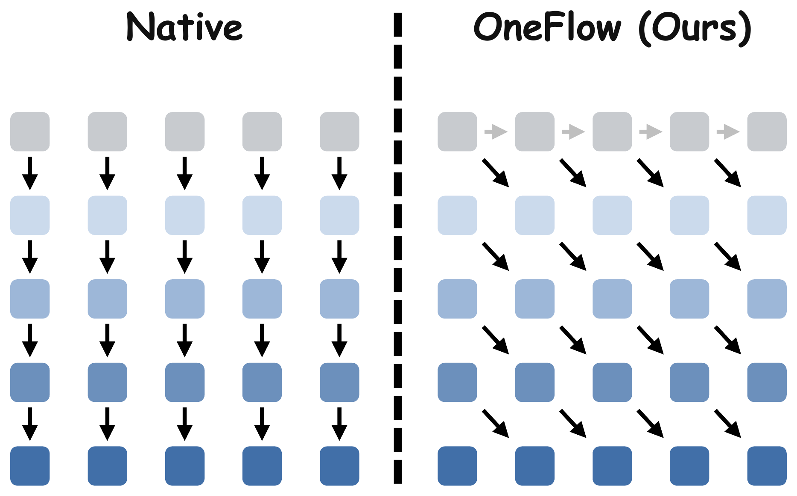
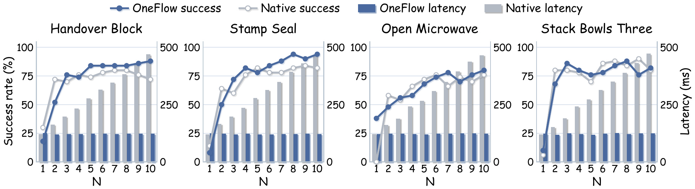
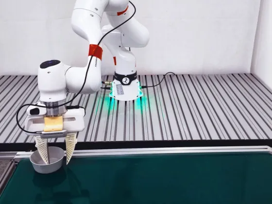
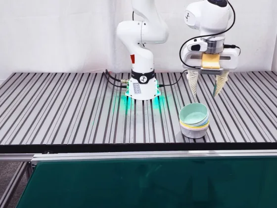
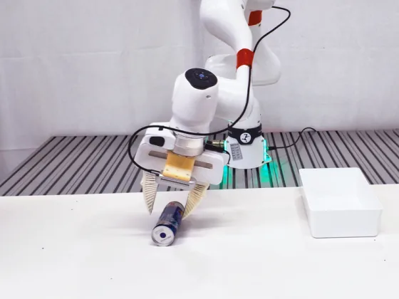
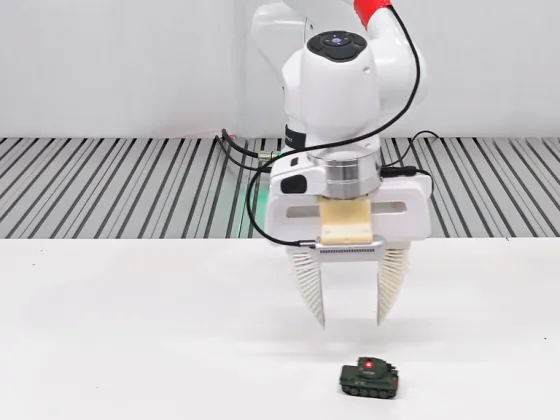
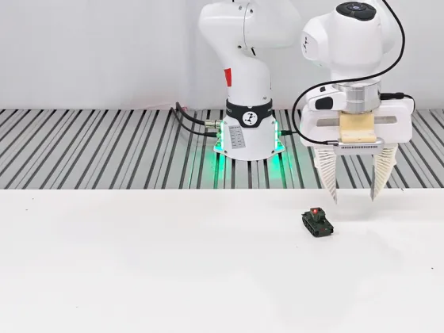
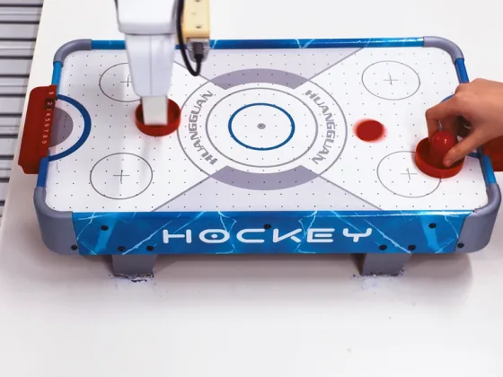

Streaming alignment
先对齐物理时间
执行两步后，每个动作块去掉开头两格，剩下的动作与各自原来的噪声一起前移。先从末端状态扣去它原有的源噪声分量，将余量延伸到新出现的两格，再按当前阶段的噪声水平加入新噪声。各阶段共用这份新噪声。这样，所有候选都在描述同一段未来。
多步去噪，单次前向
Parallelizing Flows for One-Pass Action Generation
许多机器人策略依靠多步去噪生成高质量动作，但每一步都要等上一步算完。能否让已有的流策略保留多步采样的任务表现，同时把每轮重规划的等待压到一次前向传播的量级？

Research question
从流匹配策略，到视觉语言动作模型（VLA），再到同时预测视频和动作的世界动作模型（WAM），许多机器人模型都依靠迭代去噪生成一段动作。它们在操作任务中表现出色，但多次网络调用首尾相依。机器人只有等这一串计算结束，才能根据观测发出新动作。在动态或接触密集的任务中，这段等待限制了闭环响应。
能否直接用已有的预训练流策略，在一次前向传播的时延量级上，保留多步采样的动作质量？
OneFlow 尝试在单次前向传播里容纳更多计算，让多个去噪阶段并行。困难在于，如果每次都从噪声开始求一条新轨迹，后续阶段所需的输入还不存在。即使并行估计这些输入，也往往需要多轮网络调用来修正它们。闭环控制提供了另一种安排计算的机会。
Rolling pipeline
把重规划轮次 k 与去噪阶段 i 分开看，顺序依赖就有了新的位置。机器人若预测未来 8 步，只执行前 2 步就重新观察，下一轮仍有 6 个动作位置与上一轮重叠。OneFlow 保留不同噪声水平的整段动作估计，将依次去噪的工作分摊到连续几轮重规划。初始化后，每轮用最新观测做一次批量前向传播，就能同时推进这些阶段。
| 重规划 | 第 1 轮 | 第 2 轮 | 第 3 轮 | 第 4 轮 |
|---|---|---|---|---|
| 规划窗口 | 3–10 | 5–12 | 7–14 | 9–16 |
| 阶段 1 | 新位置 | |||
| 阶段 2 | 修正 | |||
| 阶段 3 | 细化 | |||
| 阶段 4 | 执行 |
竖着读一列，四个阶段都用这一轮的观测并行更新。沿深色对角线读，第 9 个动作从新进入窗口到排在队首，能连续接收四次观测的修正。图示追踪其中一条信息传播路径。
每次预测 8 步，执行 2 步，去噪分为 4 个阶段。
横向编号表示动作实际执行的先后顺序。
每个 t 对应一整段 8 步动作在该噪声水平的估计。
本轮 4 次前向累计 8 次
本轮 1 次前向累计 5 次
Streaming alignment
执行两步后，每个动作块去掉开头两格，剩下的动作与各自原来的噪声一起前移。先从末端状态扣去它原有的源噪声分量，将余量延伸到新出现的两格，再按当前阶段的噪声水平加入新噪声。各阶段共用这份新噪声。这样，所有候选都在描述同一段未来。
Parallel reconstruction
把对齐后的所有候选组成一个批次，让同一个预训练网络一次预测每个候选的速度。这些速度给出各阶段对最终动作的估计。一轮结束时，机器人执行输出的开头几步，中间状态留给下一轮继续修正。
设 Ci 为对齐到当前轮次的第 i 个候选，剩余去噪时间为 ri = 1 − ti。网络给出的速度 Vi 指向一个局部估计的终点 Di。
当前一阶段已经修正，后一阶段的起点也变成了 X′i。OneFlow 在局部保持终点估计 Di 不变，从新起点向它移动剩余距离的 hi/ri。
展开递推后，每一层都是源噪声和各终点估计的加权和。权重只取决于去噪网格，可以预先算好，用一次矩阵乘法重建所有状态。最后一步的权重 hi/ri 等于 1，输出就是最后一个终点估计。更新中间状态的收益会在后续轮次体现。

Experiments
在三个仿真平台上，OneFlow 用相同的预训练策略权重，把每轮重规划缩为一次批量前向传播。先看机器人还能完成哪些任务，再比较从观测到动作实际节省了多少时间。
世界动作模型 · RoboTwin 2.0
| 采样配置 | 去噪阶段 | 每轮前向 | 平均成功率 |
|---|---|---|---|
| 原生一步 | 1 | 1 | 40.8% |
| 原生多步 | 10 | 10 | 89.4% |
| OneFlow | 10 | 1 | 91.0% |
| OneFlow+ | 10 | 1 | 91.1% |
直接将十步求解缩为一步时，成功率降至 40.8%。把十个阶段分摊到连续几轮重规划后，OneFlow 在一次前向传播内达到 91.0%。
论文表 3 汇总全部 50 项任务，每项各测试 100 个标准场景和 100 个随机化场景，每种配置共 10,000 回合。每轮预测 32 步、执行 8 步。
视觉语言动作模型 · SimplerEnv
| 采样配置 | 去噪阶段 | 每轮前向 | 平均成功率 |
|---|---|---|---|
| 原生一步 | 1 | 1 | 72.0% |
| 原生多步 | 5 | 5 | 74.0% |
| OneFlow | 5 | 1 | 81.3% |
| OneFlow+ | 5 | 1 | 79.2% |
提升在不同机器人上并不均匀。以 WidowX 的胡萝卜摆盘为例，五步原生采样成功率为 20.8%，OneFlow 达到 63.9%。开启引擎后，该任务为 54.9%。
论文表 2 对 Google Robot 的视觉匹配（VM）、变体聚合（VA）和 WidowX 三组平均成功率等权取平均。每轮预测 8 步、执行 1 步。
视觉语言动作模型 · SimplerEnv
| 采样配置 | 去噪阶段 | 每轮前向 | 平均成功率 |
|---|---|---|---|
| 原生一步 | 1 | 1 | 54.8% |
| 原生多步 | 4 | 4 | 59.9% |
| OneFlow | 4 | 1 | 62.5% |
| OneFlow+ | 4 | 1 | 62.1% |
平均值掩盖了很接近的对照。在 Google Robot 视觉匹配设置中，原生四步为 77.3%，OneFlow 为 77.2%。两者成功概率之差的配对 95% 置信区间包含零。
论文表 2 对 Google Robot 的视觉匹配、变体聚合和 WidowX 三组平均成功率等权取平均。每轮预测 8 步、执行 1 步。配对区间见补充材料表 8。
RGB 观测 · RoboMimic
| 采样配置 | 去噪阶段 | 每轮前向 | 平均成功率 |
|---|---|---|---|
| 原生一步 | 1 | 1 | 43.6% |
| 原生多步 | 10 | 10 | 61.2% |
| OneFlow | 8 | 1 | 64.7% |
| OneFlow+ | 8 | 1 | 65.1% |
五项任务并非同样困难。OneFlow 在 Lift 和 Can 上均达到 100%，在 Transport 上仅为 14%，因此平均成功率上升与个别任务仍然困难可以同时成立。
论文表 1 对五项任务等权取平均。每项固定 50 个初始场景，原生采样每场景运行一次，两种 OneFlow 配置每场景使用三组配对噪声。每轮预测 16 步、执行 4 步。
“每轮前向”统计初始化之后的去噪网络调用次数。一批中即使有多个去噪阶段，也只计一次调用。OneFlow+ 表示同时启用 OneFlow 采样和执行引擎。
Fast-WAM 的 30.3 倍加速包含两部分。仅改变采样方式，耗时从 503.53 ms 降至 103.20 ms。OneFlow 再启用执行引擎后降至 16.62 ms。
| 采样配置 | 未启用引擎 | 启用引擎 |
|---|---|---|
| 原生十步 | 503.53 | 51.83 |
| 原生一步 | 87.41 | 14.80 |
| OneFlow | 103.20 | 16.62 |
在相同引擎下，以原生十步为基准，加速约为 3.1 倍。原生一步还可降至 14.80 ms，但它在 RoboTwin 上的平均成功率只有 40.8%。
时间取自论文表 4 和补充材料表 10。在 A100 上预热后计时，批大小为 1，从 CPU 观测到解码后的 CPU 动作。成功率另行闭环评测。
在 Xiaomi Robotics 0 上，完整 OneFlow 每轮同时更新中间状态和最终动作。当新观测只用于更新最终动作、其余阶段沿用旧估计时，后续迭代就会接着使用这些旧估计。
| 更新方式 | 视觉匹配 VM | 变体聚合 VA |
|---|---|---|
| 完整 OneFlow | 89.2% | 75.9% |
| 只更新最终动作 | 6.7% | 8.7% |
在变体聚合设置中，两种更新方式的成功率分别为 75.9% 和 8.7%。这解释了为什么流水线中的每个去噪阶段都需要接收新观测，才能给后续重规划提供可用的动作估计。
论文表 6 在同一策略、同一环境中消融并行重建。两种配置每轮都调用一次去噪网络。
Controlled experiment
设想两个采样器都能看到最近三次观测，依次分配 3、4、3 步去噪。第一个在本轮调出三帧历史，从头解一次。第二个提前两轮开始，每次机器人执行四个动作，便前移窗口，接着修正尚未完成的那些动作。两组都用原生网络、相同源噪声，稳态每轮都调用十次网络。
同样的观测顺序和前向预算下，持续修正同一段未来动作提高了任务成功率。OneFlow 用一次批量前向达到 60.0%。在这组对照中，跨轮接续解释了为什么保留旧计划仍然能从新观测中获益。
补充材料图 8(a)。RoboMimic 五项任务，状态输入，预测 16 步、执行 4 步，未启用引擎。两组原生对照的配对成功概率差的 95% 同时置信区间为 [0.032, 0.109]。
Test-time compute
把并行阶段数 N 从 1 增至 10，Fast-WAM 在交接方块任务上的成功率从 18% 升至 88%。这十种设置的 OneFlow 预热时延中位数落在 119.3–126.2 ms。增加阶段会扩大批次，但在这个测量范围内，等待时间增长有限。

Real-world manipulation
回击冰球和抓滚动瓶子，需要抓住短暂的接触时机。跟随小车和在传送带上叠碗，则要求机器人持续修正动作。论文在同一台 Franka 机械臂上测试了这两类能力。



机器人需要在碗随传送带移走前抓住它，再转向堆叠位置。原生采样在 50 轮中没有完成过整套动作，OneFlow+ 的整轮成功率达到 30%。即使推理更快，完整堆叠仍然困难。



这个任务按轮计分，抓到滚动的瓶子即为成功。使用原生采样时，机械臂在 18% 的回合中抓到瓶子，使用 OneFlow 和 OneFlow+ 时分别达到 44% 和 72%。



照片给出外部视角，计分使用腕部相机。每轮持续 20 秒，统计小车至少部分可见的时间占比，再对 50 轮取平均。OneFlow+ 的 54% 意味着平均每轮约有 10.8 秒能看见小车，原生采样约为 2.4 秒。



每轮发 10 个球，机器人将球击回发球一侧才计入回击。每种方法共接 500 个来球，原生采样、OneFlow、OneFlow+ 的回击率分别为 6%、34% 和 66%。

抓瓶与叠碗按成功回合数计分，冰球按来球数计分，追车按可见时间计分。每个任务的四种配置使用相同的策略权重，每次根据最新观测预测 16 步动作，发出第一步后再规划。
| 指标 | 原生四步 | 原生四步 ＋引擎 | OneFlow | OneFlow+ |
|---|---|---|---|---|
| 叠好六只碗每种方法 50 轮 | 0% | 14% | 22% | 30% |
| 抓到滚动瓶子每种方法 50 轮 | 18% | 36% | 44% | 72% |
| 小车可见时间占比每种方法 50 轮，每轮 20 秒 | 12% | 16% | 24% | 54% |
| 冰球回击率每种方法 50 轮，每轮 10 球 | 6% | 12% | 34% | 66% |
| 模型推理延迟RTX 4090，中位数（ms） | 46.99 | 28.77 | 27.98 | 11.97 |
实拍取自论文图 5。正文表 5 和附录表 14 给出各配置的结果，附录 B.3 说明了同步控制流程、每个任务的 100 条训练示范和小车可见性的标注方法。
加入同一引擎后，原生四步的模型推理中位数为 28.77 ms，与未加引擎的 OneFlow（27.98 ms）接近。但这两种配置的冰球回击率分别为 12% 和 34%，小车可见时间占比分别为 16% 和 24%。在相近的等待时间下，跨轮更新动作计划的策略仍取得了更高的得分。
两种采样器都使用引擎时，OneFlow+ 将模型推理中位数进一步缩短到 11.97 ms，进入实机 60 Hz 控制的 16.67 ms 单轮时间预算。
Discussion
研究者在 OpenWAM 拿起物体后，将目标架沿横轴平移 8 cm。机器人已经形成了原来的放置计划，这次扰动直接检验它能否根据新观测改道。
| 采样方式 | 目标不动 | 平移 8 cm |
|---|---|---|
| 原生一步 | 54.7% | 32.0% |
| 原生十步 | 86.7% | 57.3% |
| OneFlow | 88.0% | 66.0% |
补充材料表 11，RoboTwin 的 Place Object Stand。每种条件使用相同的 50 个场景，每个场景测试 3 条采样噪声序列。表中选取保持原位与实际移动两种条件。
目标移动后，三种方法的成功率都下降了。OneFlow 在这个任务上仍能修正部分已形成的计划，但 66.0% 的成功率也说明突发变化依然会造成失败。
References
方法推导见论文第 3 节与补充材料算法 1。图 1–3 和图 5 展示冰球回击、方法、计算预算实验和实机任务。主实验见表 1–6。补充材料的图 6 与图 8 分析显存和跨轮复用，表 8、10、11、14 分别给出置信区间、同引擎延迟、目标扰动及实机对照。
交互示例沿用项目站每轮预测 8 步、执行 2 步的设置。Key insight 和 Method 栏目分别解释动作窗口重叠与跨轮去噪。项目站源码（需仓库权限）